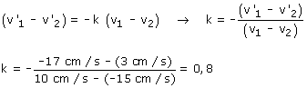
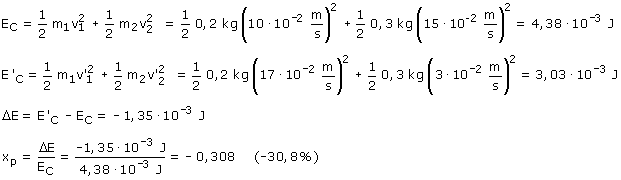

Tras el choque la velocidad relativa se ha invertido, como debe ser, y ha reducido su valor al 80% (20/25) del valor inicial, luego el coeficiente de restitución vale 0.8 Lo mismo para los amantes de las fórmulas:  Veamos la energía cinética perdida:  En el choque se han perdido 1.35·10-3 J de energía cinética, es decir el 30.8% de la que había |